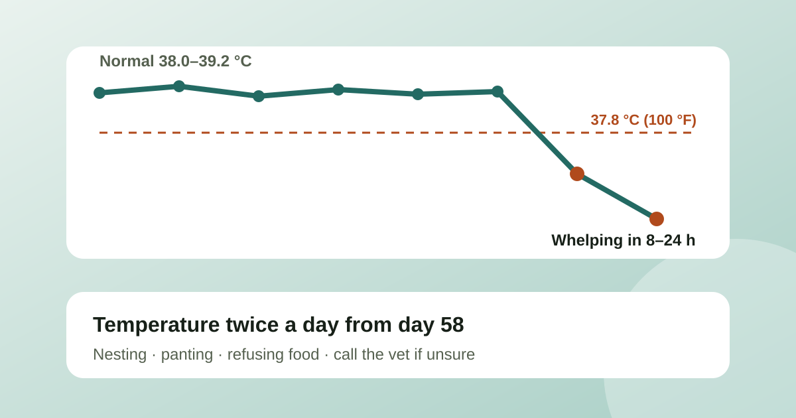

Dog whelping signs: the temperature drop and what happens next

The most reliable sign that a bitch will whelp within a day is a drop in rectal temperature, from her normal 38.0 to 39.2 °C (100.5 to 102.5 °F) to below 37.8 °C (100 °F), usually 8 to 24 hours before the first puppy. Start taking her temperature twice a day about a week before the due date, and watch for nesting, panting and refusing food.
When whelping is due
A dog pregnancy lasts about 63 days from ovulation, with a normal range of roughly 58 to 68 days when counted from the breeding date. The dog pregnancy calculator gives a due date from the mating or from the progesterone ovulation date, which is more accurate. Count from ovulation if you have it.
How to take her temperature
Start about day 58 after ovulation, or around 8 weeks after breeding if you did not time ovulation.
Use a digital rectal thermometer with a little lubricant, kept for the dog only.
Take it at the same times every day, morning and evening, and write each result down. Single readings vary, so the trend matters most.
Look for a clear fall. Normal is 38.0 to 39.2 °C (100.5 to 102.5 °F). A drop under 37.8 °C (100 °F), often to about 37 °C (98 to 99 °F), means labour is likely within 8 to 24 hours.
Do not rely on it alone. A few bitches, especially small ones or those with large litters, show no clear drop.
The three stages of whelping
Stage
What you see
Typical length
1. Early labour
Restless, nesting, panting, shivering, refusing food, may vomit
6 to 12 hours, up to 24 in a first litter
2. Delivery
Visible straining, puppies born in a membrane sac
A puppy every 30 to 60 minutes, rests up to about 2 hours
3. Afterbirth
Placenta passed after each puppy or in small groups
Within 5 to 15 minutes of each puppy
Stages 2 and 3 alternate until the litter is done. Most dams eat some placentas, which is normal, but many breeders limit it to one or two to avoid an upset stomach. Count the placentas so you know none is left behind.
Prepare the whelping area
Set up a whelping box in a quiet, warm room about a week early, so she settles in.
Keep clean towels, a heat source for the puppies, a kitchen scale, a notebook and your vet's emergency number nearby.
she strains hard for over 30 to 60 minutes without a puppy appearing;
green or bloody discharge appears before the first puppy;
she rests for more than 2 to 4 hours while you know more puppies are inside;
her temperature has dropped but nothing starts after 24 hours, or she is more than 65 days past ovulation;
she is weak, in obvious pain, collapses or has a fever;
a puppy is stuck in the birth canal.
This guide gives general information, not veterinary advice. Your vet knows your dog, and breeds with big heads or small hips, such as bulldogs, often need planned care or a caesarean.
Keep the dates and litter records in one place
Sire & Dam tracks the heat, progesterone stages with an ovulation estimate, the whelping countdown and puppy weights, so the due date and the temperature log are in the same app. It is free on Android and works offline.
What temperature means a dog is about to give birth?
A normal temperature is about 38.0 to 39.2 °C (100.5 to 102.5 °F). Typically it falls below 37.8 °C (100 °F), often to about 37 °C (98 to 99 °F), around 8 to 24 hours before whelping begins.
When should I start taking my dog's temperature?
From about day 58 after ovulation, twice a day at the same times. If you did not time ovulation, start about 8 weeks after the breeding.
How long between puppies is normal?
Usually between a few minutes and about an hour. Rests of up to 2 hours can happen. If your dog rests longer while you know more puppies remain, or strains hard for over 30 minutes to an hour without producing one, call your vet.
What are the signs a dog is going into labour?
Restlessness, nesting, panting, shivering, refusing food, and sometimes vomiting. This first stage can last 6 to 12 hours, and up to 24 in a first litter.
When should I call the vet during whelping?
Call for green or bloody discharge before any puppy arrives, strong straining for more than an hour without a puppy, a long rest while puppies are left, a dog that is weak, or any labour that has not started more than 24 hours after the temperature drop.
Most dogs come into heat about every six months, and the visible heat lasts around three weeks. Knowing the four stages tells you when she is fertile and when the next heat is due.
Progesterone rises from under 1 ng/mL to about 5 ng/mL at ovulation. Test every one to two days and you can pin down the fertile days instead of guessing from the calendar.
Set hatching eggs within 7 days of laying. Keep them pointed end down at 13 to 16 °C (55 to 60 °F), turn them once a day after the first few days and let them warm up before they go in.